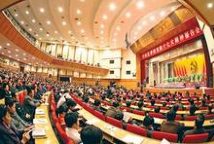

国家高度重视保护人民生命财产安全、高度重视安全生产工作的一系列重要部署，引发媒体高度关注，各大媒体纷纷发表评论员文章。
中共中央总书记、国家主席、中央军委主席习近平６日就做好安全生产工作再次作出重要指示。要求国务院有关部门将这些事故及发生原因的情况通报各地区各部门，使大家进一步警醒起来，吸取血的教训，痛定思痛，举一反三，开展一次彻底的安全生产大检查，坚决堵塞漏洞、排除隐患。要始终把人民生命安全放在首位，以对党和人民高度负责的精神，完善制度、强化责任、加强管理、严格监管，把安全生产责任制落到实处，切实防范重特大安全生产事故的发生。
“安监局的暗访很给力。”“他们这样辛苦，可能起点作用，看到的起码是真实的。”“那些事前安排好的视察、检查都是走走过场，根本查不出任何问题！”“安监总局亲自下去暗访，显示出中央的决心和力度，希望能对当下的安全生产形势起到改善作用！”
“安全生产监督者不能以检查出多少隐患为目的，更重要的是继续监督隐患的整改落实情况。”“早就该这么做了。各行各业的监督不要摆在纸上，要在行动中。”“安全责任追究不到位，是事故频发的原因。”
“安全生产工作确实是一天都不能放松，一时半会儿都不能放松，始终要警示高悬，警钟长鸣，常抓不懈，只有这样，才能始终引起人们对安全生产的高度重视。”“坚持下来，将对安全工作发挥强有力的推动作用。”“没有长效机制，那是后患无穷。”